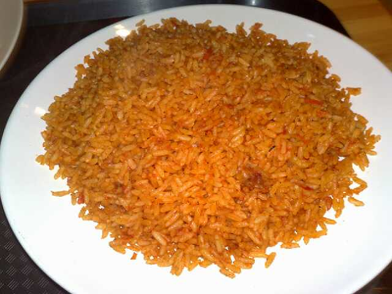

Jollof Rice

Home
Description
This jollof rice recipe is one that my mother and father taught me, although i'm recounting everything from memory.
Make sure to not put in too much salt. Happy eating!
Ingredients
- Two tablespoons of salt
- Two onions (red or white, either is fine)
- Granulated garlic
- Oregano Leaves
- Complete Seasoning
- Curry Powder
- Two red bell peppers
- White Rice
- Vegetable Oil
Steps
- Cut the two onions
- Blend the red bell peppers after taking out seeds
- Get a pot and put the oil in it
- Set the heat to a mild temperature so the oil can heat up
- Put the sliced onions in the pot
- Put in blended bell peppers
- Wash Rice
- Put rice in pot after 5-15 minutes
- Put in oregano leaves, and complete seasoning
- Put in curry powder
- Wait until rice looks orange like the picture, add water if necessary
- Finished.